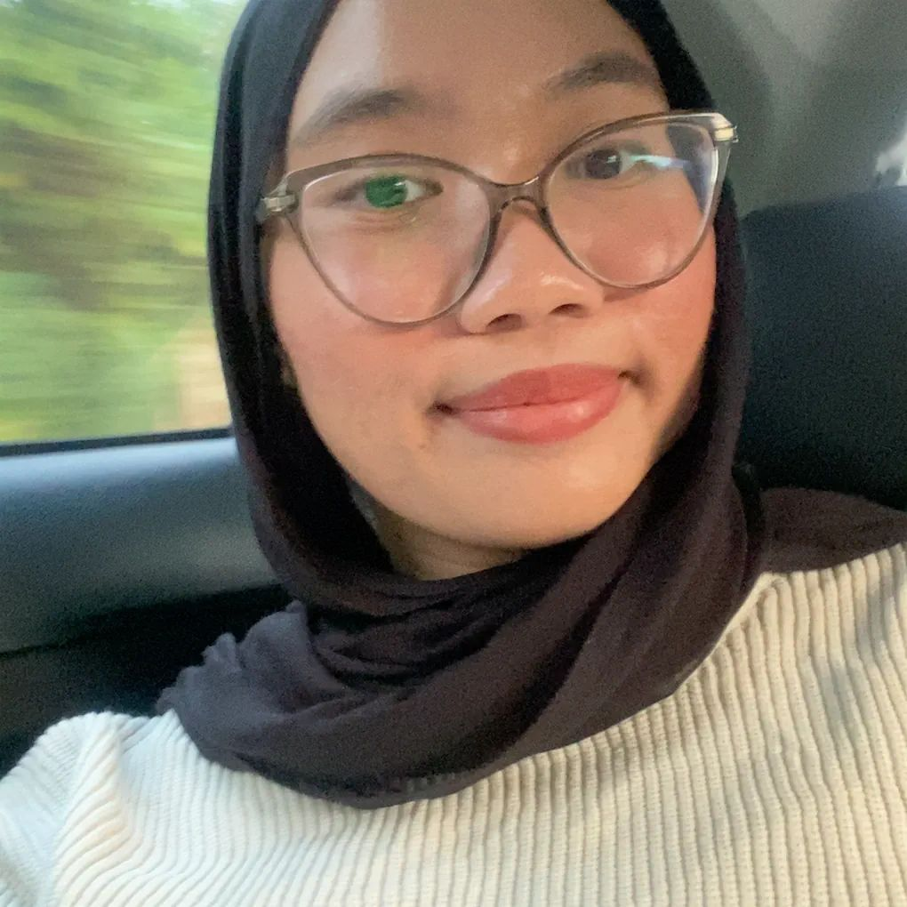

As They
See Me
-

Aleeya Adriana
Best FriendAdena is someone who is deeply considerate and emotionally aware, able to sense when others are hurting even without them saying a word. She cares too much, often giving her heart and attention to people who may not truly deserve it. She tends to keep her feelings to herself, carrying her emotions quietly, while constantly worrying about how others perceive her, even when it slowly drains her emotionally.
-

Izani Sofea
Best FriendBisyri Adena is the friend that I rely on the most. She is cheerful and always able to make others laugh. She often acts like an older sister, looking out for me and giving support whenever I need it. But even though she’s strong and caring, I can tell that sometimes she also needs someone to rely on, which makes her feel even more real and precious to me.
-
Alisya Haziqah
Older SisterShe's actually quite funny and easy to be around. She’s the one I usually look up to for things like makeup, style, or what to buy, because she always seems to know what looks good. She also has a way of making home feel more comfortable and fun just by being herself. At the same time, she often keeps her feelings bottled up, choosing to stay quiet instead of expressing what she’s really going through, and she overthinks how others see her, always wanting to be understood and accepted.
where to find me
My Resume
Click to see my full professional background.
View My Resume